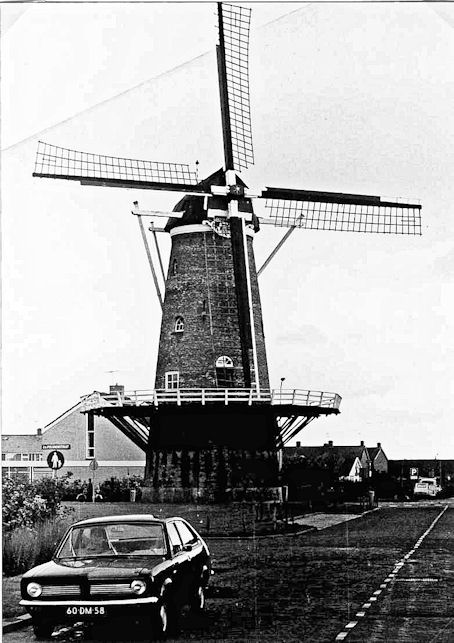

Monster: bestaande molens
In oude ansichten

 De Vier Winden 1 |
 De Vier Winden 2 |
 De Vier Winden 3 |
 De Vier Winden 4 |
 De Vier Winden 5 |
 De Vier Winden 6 |
 De Vier Winden 7 |
 De Vier Winden 8 |
 De Vier Winden 9 |
 De Vier Winden 10 |
 De Vier Winden 11 |
 De Vier Winden 12 |
|
 De Vier Winden.13. |
 De Vier Winden. |
 De Vier Winden in de jaren 1950 Foto van Marja van den Burg-van der Sar. |
 De Vier Winden. |
 De Vier Winden 14 |
 De Vier Winden. |
 De Vier Winden |
 Deze pagina is gemaakt op 25-12-2006: Tijd: 15:29 uur.
Deze pagina is gemaakt op 25-12-2006: Tijd: 15:29 uur.

Laatste wijziging:2-8-2012; Tijd: 21:57 uur.
Met dank aan: de
Hollandsche molen/Rob Pols/Hans Klok/Gerard Barendse/
Erwin Esselink/Teun van der Sloot/Garrit Hendriks voor het gebruik van de foto's